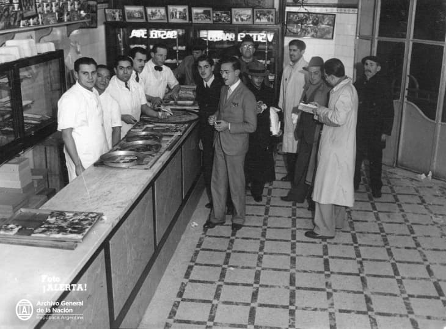

A beautiful culture is enriched by its visitors from abroad: Italian immigrants and their children
The story begins in the late 19th and early 20th centuries, when massive waves of Italian immigrants arrived at the port of La Boca. They brought with them their recipes, their kneading techniques, and their dreams. But ingredients were different here, and so was the clientele.
To satisfy the hunger of workers after long days, the pizza became thicker, cheesier, and more caloric. This gave birth to the "Media Masa" (half-dough), a sponge-like base capable of holding an enormous amount of mozzarella.
Legends like "Güerrin" or "Las Cuartetas" opened their doors in the 1930s and haven't closed since. The "Fainá", a Genoese chickpea flatbread, was introduced to be eaten on top of the pizza, creating the famous "Pizza a caballo" (Pizza on horseback).
